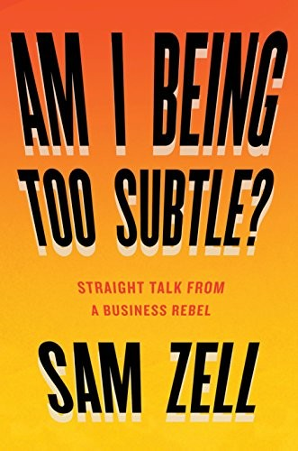

1939年，山姆·泽尔的父亲伯纳德·泽尔（Bernard Zell）带着家人搭上了纳粹占领波兰前的最后一班火车，逃往美国。两年后，泽尔在芝加哥出生。这段家族逃亡史被他写进了回忆录《我这话还不够直白吗？》（Am I Being Too Subtle?: Straight Talk from a Business Rebel，Portfolio于2017年出版）第一章"不可能的人生"（An Impossible Life）里——他说，正因为父亲活下来本身就是一场不可能的胜利，自己从小就相信没有什么是做不到的。全书共十二章，从早年在密歇根大学附近做校园房东，到晚年执掌私人投资公司Equity Group Investments，泽尔以第一人称记录了自己五十余年的交易生涯，标的横跨房地产、连锁药店、停车场、床垫厂和施文自行车。
1976年，泽尔在一篇文章里给自己起了个绰号——"坟场舞者"（Grave Dancer），形容自己专门在别人的错误尸骨上起舞：买下陷入困境、被市场抛弃的资产，等价格反弹后卖出。这个称号伴随他一生，也是书中"坟场舞者"一章的核心方法论：他判断一笔交易的标准很简单——"如果下行风险大、上行空间小，掉头就走；如果上行空间大、下行风险小，才值得做。"书中笔墨最重的一笔交易，是2007年2月把旗下上市房地产信托Equity Office Properties以393亿美元卖给黑石集团，这是当时历史上规模最大的杠杆收购。泽尔在书中特意纠正外界的传说："人们至今都说我卖掉Equity Office是精准踩中了市场顶点。事实是，我根本没打算这么做……我只是收到了一个'教父式报价'，一个你无法拒绝的价格。"为了在协议限制下仍能试探是否有更高出价，他给地产大亨史蒂夫·罗斯（Steven Roth）寄去一首诗投石问路，最终把价格又谈高了一截。同一年，他用类似的杠杆逻辑买下了论坛报业集团（Tribune Company），次年金融危机爆发，论坛报业申请破产保护，泽尔个人损失超过3亿美元——他在书中同样毫不避讳地写了这笔失败的交易。
泽尔以说话直接著称，"我这话是不是太隐晦了？"（Am I being too subtle?）是他多年来敲打下属、逼人把话说透的口头禅，书名由此而来。《华尔街日报》评价这本书："这位出了名直言不讳的商人，带着几句粗口，讲述了自己商业生涯的起起落落和学到的教训。"书中一个反复被提起的细节，是他早年在密歇根大学附近做房东时，为了拿下街区最后一块地皮，没有直接跟房主"D太太"谈价钱，而是先弄清她真正在意的是照顾自己患病的弟弟，于是提出在她的房子旁加盖一间单卧公寓——这笔交易靠的不是谈判技巧，而是先听懂对方要什么。2023年5月，泽尔因病去世，享年81岁。
书里没有系统的选股框架，更接近一个交易老手把几十年案例摊开来讲。泽尔看资产时先问供给能否增加：土地、牌照或建设周期造成的供给约束，往往比对宏观经济的预测更能保护价格；买入困境资产则要让成本足够低，使现有现金流而非乐观假设就能偿债。他还反复区分流动性与价值——好资产也可能因融资窗口关闭而拖垮高杠杆的持有人。Equity Office和Tribune一成一败，恰好检验了这套方法的边界：前者在买方愿意支付高溢价时退出，后者却把报业经营下滑、债务负担与金融危机叠在了一起。读这本书最有用的方式，是把泽尔的豪言与交易结构分开记录，看每一笔生意的买价、融资、退出路径和错误假设。